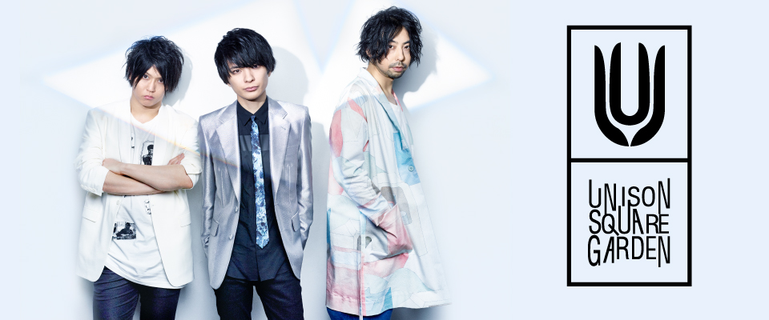

| 曲名 | タイアップ |
|---|---|
| マスターボリューム | テレビ東京系『JAPAN COUNTDOWN』2009年1月度オープニングテーマ |
| カウンターアイデンティティ | テレビアニメ「ソウルイーター」リピートショー オープニングテーマ |
| オリオンをなぞる | テレビアニメ『TIGER & BUNNY』オープニングテーマ |
| kid,I like quartet | OAD『夜桜四重奏 〜ホシノウミ〜』オープニングテーマ |
| リニアブルーを聴きながら | 映画『劇場版 TIGER & BUNNY -The Beginning-』主題歌 |
| 桜のあと (all quartets lead to the?) | テレビアニメ『夜桜四重奏 〜ハナノウタ〜』オープニングテーマ |
| ノンフィクションコンパス | OAD『夜桜四重奏 〜ツキニナク〜』オープニングテーマ |
| シャンデリア・ワルツ | OAD『夜桜四重奏 〜ツキニナク〜』エンディングテーマ |
| harmonized finale | 映画『劇場版 TIGER & BUNNY -The Rising-』主題歌 |
| シュガーソングとビターステップ | テレビアニメ『血界戦線』エンディングテーマ |
| パンデミックサドンデス | 海外ドラマ『ザ・ラストシップ』日本版エンディングテーマ |
| Silent Libre Mirage | ドラマ『男水!』主題歌 |
| 10% roll, 10% romance | テレビアニメ『ボールルームへようこそ』第1クールオープニングテーマ |
| Invisible Sensation | テレビアニメ『ボールルームへようこそ』第2クールオープニングテーマ |
| fake town baby | テレビアニメ『血界戦線 & BEYOND』オープニングテーマ |
